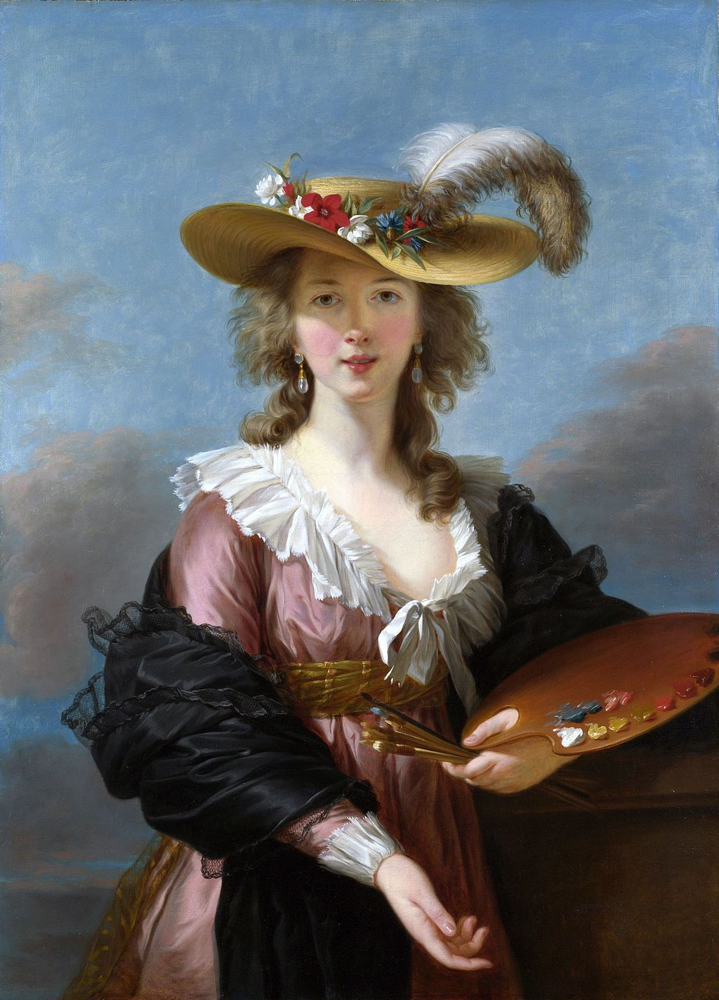

<head>
<meta charset="UTF-8" />
<meta name="keywords" content="drawing, painting" />
<meta name="description" content="drawings by Sunjy" />
<title>Sunjy</title>
<link rel="shortcut icon" type="image/x-icon" href="../../mImages/mCommon/favicon.ico" media="screen" />
<link rel="stylesheet" type="text/css" href="../../mCsses/mCommon/mCssA.css" />
<link rel="stylesheet" type="text/css" href="../../mCsses/mCommon/mCssB.css" />
<link rel="stylesheet" type="text/css" href="../../mCsses/mCommon/mCssC.css" />
<link rel="stylesheet" type="text/css" href="../../mCsses/mCommon/mCssD.css" />
<link rel="stylesheet" type="text/css" href="../../mCsses/mContent/mCssA.css" />
<link rel="stylesheet" type="text/css" href="../../mCsses/mContent/mCssB.css" />
<link rel="stylesheet" type="text/css" href="../../mCsses/mContent/mCssC.css" />
<link rel="stylesheet" type="text/css" href="../../mCsses/mContent/mCssD.css" />
</head>
<script type="text/javascript" src="../../mScripts/mContent/mContentAA.js" /></script>
<script type="text/javascript" src="../../mScripts/mContent/mContentAB.js" /></script>
<script type="text/javascript" src="../../mScripts/mContent/mContentAC.js" /></script>
<script type="text/javascript" src="../../mScripts/mContent/mContentAD.js" /></script>
<script type="text/javascript"></script> 
<script type="text/javascript">
document.write('<div class="mImgAbsolute"></div>');
/*
document.write('<p class="mFontSizeBColor" />From a white paper...</p>');
document.write('<table class="center"><tr><td>');
document.write('');
document.write('</td></tr></table>');
*/
</script>


<script type="text/javascript">
document.write('<p class="mFontSizeBColor" />Self-portrait in a Straw Hat</p>');
document.write('<p class="mFontSizeSColor" />“Self-portrait in a Straw Hat” by Louise Élisabeth Vigée Le Brun portrays the prominent French portrait painter who was a friend and favorite artist of Marie Antoinette.<br><br>In the 1700s, Madame Le Brun painted portraits of nobility, and with Marie Antoinette’s support, her career flourished. She painted more than 30 paintings of the queen and her family but was forced to flee the country during the French Revolution.<br><br>After fleeing the French, she lived and worked in the major European capitals. She enjoyed the patronage of European aristocrats, actors, and writers, and was elected to art academies in ten cities.<br><br>Le Brun’s artistic style was part of the aftermath of Rococo, while she also adopted a neoclassical style. Her color palette was Rococo influenced, but her style assumed the emerging Neoclassicism.<br></p>');
document.write('<table class="center" /><tr><td>');
document.write('<br>In the 1700s, Madame Le Brun painted portraits of nobility, and with Marie Antoinette’s support, her career flourished. She painted more than 30 paintings of the queen and her family but was forced to flee the country during the French Revolution.<br><br>After fleeing the French, she lived and worked in the major European capitals. She enjoyed the patronage of European aristocrats, actors, and writers, and was elected to art academies in ten cities.<br><br>Le Brun’s artistic style was part of the aftermath of Rococo, while she also adopted a neoclassical style. Her color palette was Rococo influenced, but her style assumed the emerging Neoclassicism.<br>" />');
document.write('</td></tr></table>');
</script>


